Kingdom Hearts Games
Overview
The Kingdom Hearts series follows Sora, a young boy chosen as the Keyblade’s wielder, as he journeys across iconic Disney worlds and original landscapes to combat darkness. Alongside Donald, Goofy, and a cast of memorable allies, Sora faces powerful forces that seek to tip the balance between light and darkness, uncovering deep truths about the heart and his own identity. Across multiple games, Kingdom Hearts explores friendship, destiny, and the struggle to protect the worlds from the forces of darkness, with each game adding new layers to this epic adventure.
Kingdom Hearts (2002)
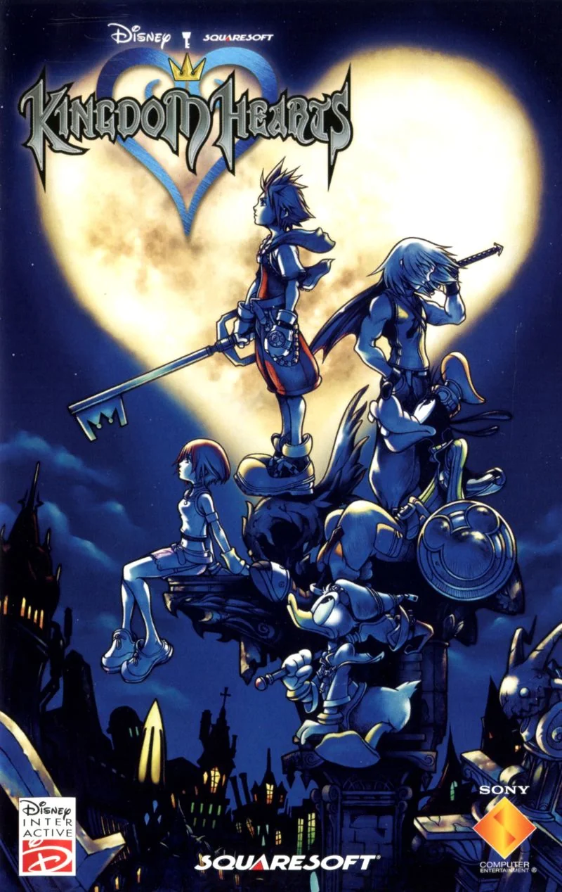Sora, a cheerful boy from Destiny Islands, finds his world destroyed and his friends missing. Chosen as the wielder of the Keyblade—a legendary weapon against the forces of darkness—he teams up with Donald Duck and Goofy to restore peace across Disney worlds. Together, they set out to find Sora’s friends, Riku and Kairi, who have fallen under the influence of a dark power known as the Heartless. Throughout his journey, Sora faces off against iconic Disney villains and discovers an even greater threat manipulating events from the shadows.
Kingdom Hearts: Chain of Memories (2004)
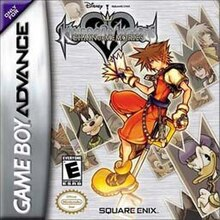Directly following Kingdom Hearts, Sora, Donald, and Goofy enter the mysterious Castle Oblivion, where they’re lured by promises of finding Sora’s missing friend, Riku. Within its walls, however, Sora's memories are altered by the sinister Organization XIII, a group seeking to manipulate him for their own purposes. With each floor climbed, Sora revisits distorted versions of the Disney worlds he previously traveled to, slowly losing memories of his real friends. Meanwhile, Riku embarks on his own parallel journey, struggling to confront his own inner darkness and guilt.
Kingdom Hearts II (2005)
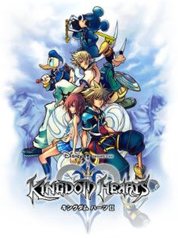After a year-long slumber, Sora awakens and resumes his battle against the Heartless alongside Donald and Goofy. This time, he faces a new threat from Organization XIII, a mysterious group of Nobodies—beings without hearts—who wish to harness the power of Kingdom Hearts for themselves. As he ventures through new and returning Disney worlds, Sora’s search for his friends deepens his understanding of the struggle between light and darkness. With his friendship bonds tested to their limits, Sora uncovers Organization XIII’s dark intentions, moving closer to a final confrontation with the powerful group.
Kingdom Hearts 358/2 Days (2009)
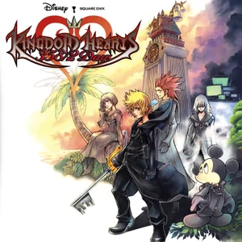Set during Sora’s deep sleep following Chain of Memories, this game explores the life of Roxas, Sora’s Nobody, a key member of Organization XIII. As Roxas embarks on missions for the Organization, he forms a close bond with fellow members Axel and Xion. But as Roxas experiences memories that aren’t his own, he begins to question his purpose and destiny. The tragic bond between Roxas, Axel, and Xion takes center stage, revealing a more personal side of the Organization and leading to Roxas’s ultimate decision to search for answers beyond the Organization’s control.
Kingdom Hearts: Birth by Sleep (2010)
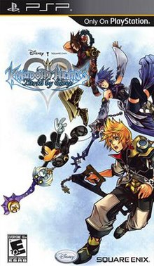This prequel to the Kingdom Hearts series follows Terra, Aqua, and Ventus—three Keyblade apprentices whose destinies are intertwined with the future conflict between light and darkness. Sent on separate journeys by their master, they each encounter a new threat called the Unversed, as well as the dark influence of Master Xehanort, an enigmatic Keyblade Master with secretive plans. As their paths intersect, the trio faces tragic consequences that reshape the world and set the stage for Sora’s adventure, revealing the origins of many familiar characters and events in the Kingdom Hearts series.
Kingdom Hearts Re:Coded (2010)
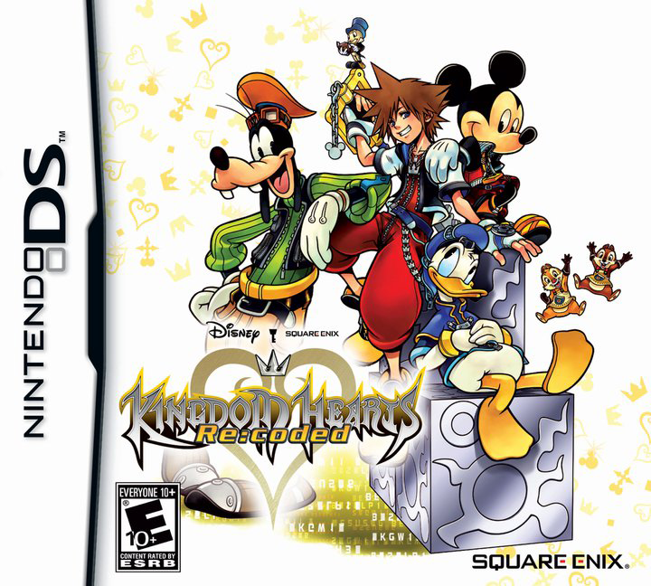When a strange message appears in Jiminy’s Journal—a record of past adventures—King Mickey and friends discover that memories have been corrupted. Using a digital version of Sora known as Data-Sora, they journey into a "datascape," a digital recreation of the worlds, to find and repair the source of these glitches. Along the way, they encounter twisted versions of the Heartless and relive memories, uncovering hints about future threats to come. Re:coded sheds light on lost memories and bridges the events between Kingdom Hearts II and Dream Drop Distance.
Kingdom Hearts 3D: Dream Drop Distance (2012)
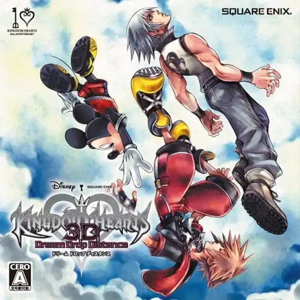To prepare for the battles ahead, Sora and Riku undertake the Mark of Mastery exam. Their quest brings them to "sleeping worlds"—worlds trapped in a dormant state. As they strive to awaken these worlds, they face off against Dream Eaters, creatures born of dreams, and encounter members of Organization XIII, who reveal plans for a revived Master Xehanort. Through their experiences, Sora and Riku gain new powers and confront personal weaknesses, setting them on a path toward the ultimate battle between light and darkness.
Kingdom Hearts χ
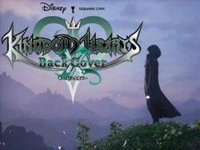This mobile prequel, set centuries before the main storyline, reveals the origins of the Keyblade War. Players assume the role of a Keyblade wielder under one of five factions led by the Foretellers. As darkness spreads, the Foretellers’ rivalry and the search for the mysterious Book of Prophecies lead to an epic conflict that forever changes the universe. Kingdom Hearts χ unveils ancient secrets, providing insight into the root of light and darkness that continues to impact Sora’s journey.
Kingdom Hearts 0.2 Birth by Sleep – A Fragmentary Passage (2017)
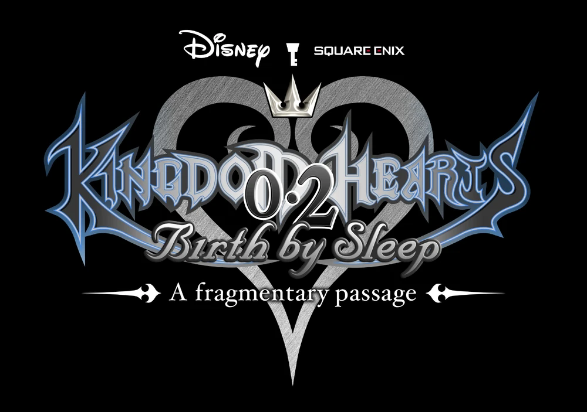This shorter entry follows Aqua, one of the protagonists from Birth by Sleep, as she wanders the dark, surreal Realm of Darkness. Alone and haunted by memories of her friends, Aqua faces manifestations of her fears and regrets. Her journey provides a glimpse of her struggle to retain hope and hints at the sacrifices required to face Master Xehanort in the looming final battle, setting the stage for Kingdom Hearts III.
Kingdom Hearts III (2019)
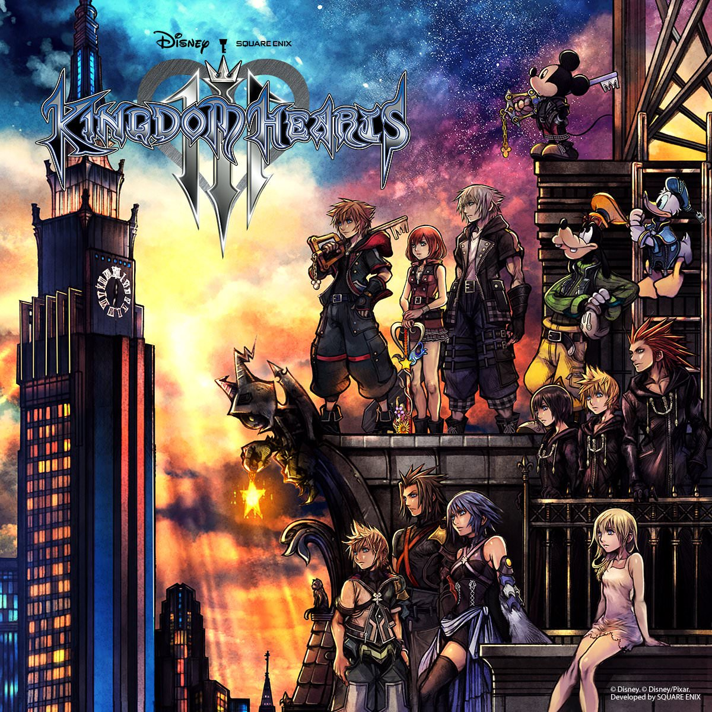In the climactic conclusion to the Dark Seeker Saga, Sora, Donald, and Goofy set out to stop Master Xehanort’s plans to ignite a new Keyblade War and seize control of Kingdom Hearts, the source of all light. Visiting beloved Disney and Pixar worlds, Sora forms powerful alliances and uncovers deeper truths about his powers and destiny. The heroes and villains of the series clash in an epic battle for the fate of all worlds, and Sora’s journey takes him beyond what he’s ever known in his ultimate fight to protect his friends.
Kingdom Hearts: Melody of Memory (2020)
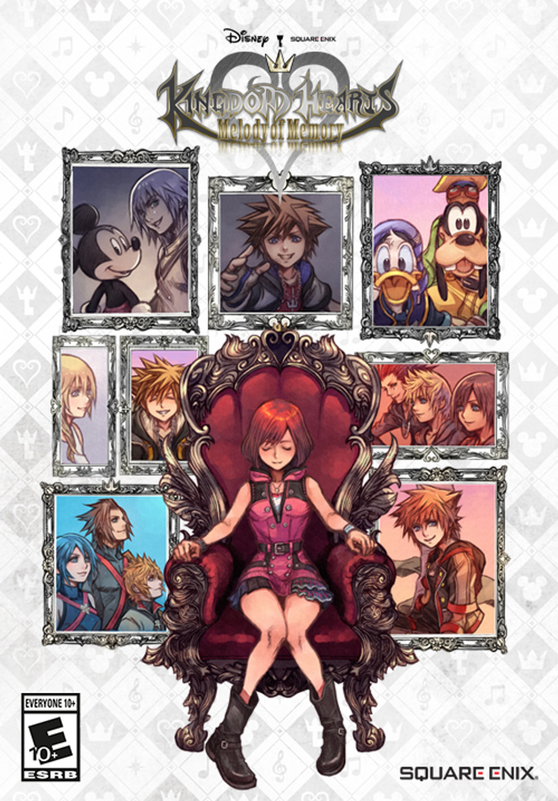This rhythm-based adventure revisits Sora’s memories as narrated by Kairi, Sora’s close friend. By traveling through key events in the series through a musical lens, players experience iconic battles, friendships, and moments from the Kingdom Hearts journey. The game also reveals insights into Kairi’s own story and hints at a new path forward for Sora and his friends as they face mysterious new threats in the next chapter of the Kingdom Hearts saga.